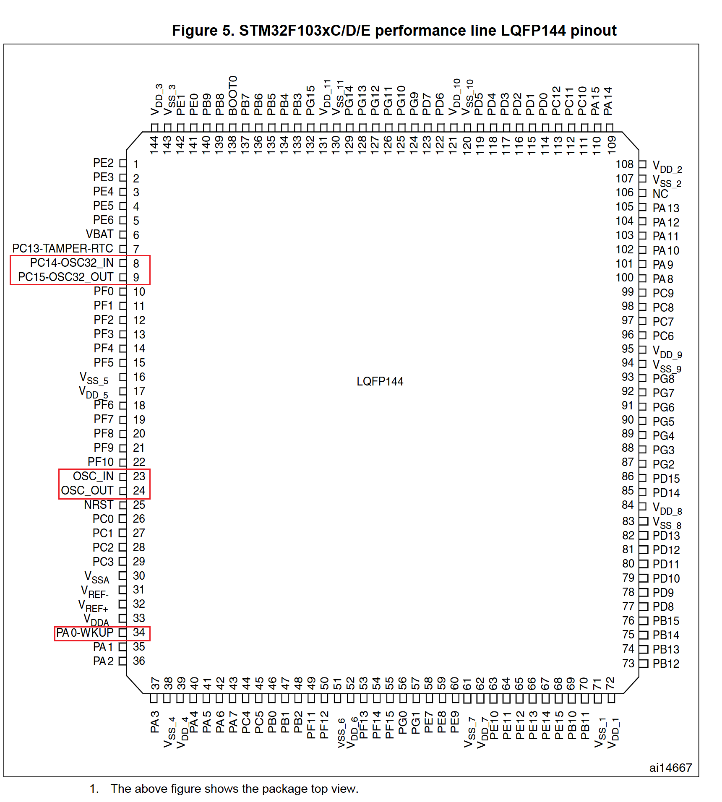
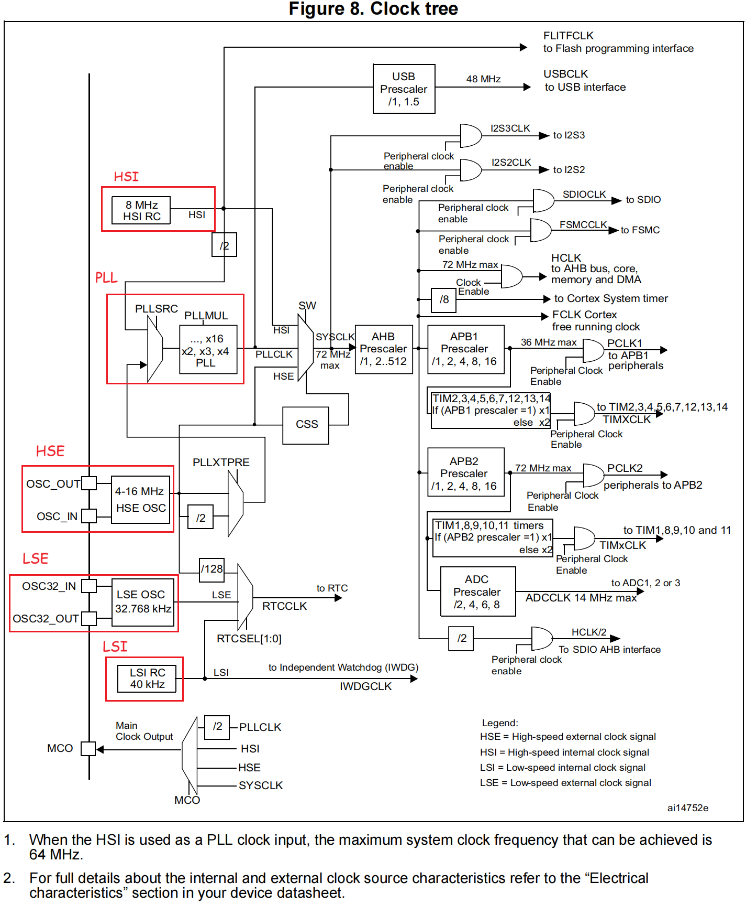

stm32f10x 时钟管理
时钟相关引脚说明
和时钟相关的pin脚如下图所示

OSC_IN 和 OSC_OUT
用途：
用于连接外部高速晶体振荡器，为 STM32F10x 芯片提供主时钟信号。主时钟信号是 STM32F10x 内部各个模块和外设进行同步操作的基准时钟，通过连接外部晶体振荡器，可以获得更高的时钟精度和稳定性，适用于需要高精度时钟的应用场景。
连接方式：
OSC_IN 引脚接收外部晶体振荡器的时钟信号输入，OSC_OUT 引脚输出经过振荡器放大和整形后的时钟信号。这两个引脚一般需要连接到外部晶体振荡器的相应引脚上，以建立稳定的振荡回路。
不使用外部晶振 OSC_IN 和 OSC_OUT 引脚处理
1. 对于 100 脚或 144 脚的芯片:
OSC_IN 应接地，OSC_OUT 应悬空。
2. 对于少于 100 脚的芯片：
有两种接法：
-
接法1: OSC_IN和OSC_OUT分别通过10K电阻接地。此方法可提高EMC性能。
-
接法2: 分别重映射OSC_IN和OSC_OUT至PD0和PD1，再配置PD0和PD1为推挽输出并输出’0’。 此方法可以减小功耗并(相对上面2.1)节省2个外部电阻。
OSC32_IN 和 OSC32_OUT
用途:
用于连接外部 32.768kHz 低速晶体振荡器，为STM32F10x芯片提供低功耗时钟信号。该时钟信号主要用于实时时钟（RTC）和低功耗模式下的时钟源，适用于需要长时间运行、低功耗和精确时间计量的应用场景。
连接方式:
OSC32_IN 引脚接收外部 32.768kHz 晶体振荡器的时钟信号输入，
OSC32_OUT 引脚输出经过振荡器放大和整形后的时钟信号。
这两个引脚一般需要连接到外部 32.768kHz 晶体振荡器的相应引脚上，以建立稳定的振荡回路。
不使用外部低速晶振时的处理
OSC32_IN 和 OSC32_OUT通常可以配置为普通 GPIO 引脚使用，或者悬空
时钟类型
-
外部高速时钟(HSE)：外接
4 ~ 16MHz的外部晶体振荡器，连接引脚 OSC_IN 和 OSC_OUT -
片内高速时钟(HSI)：内嵌出厂8MHz的RC振荡器(ARM内核使用)
-
外部低速时钟(LSE)：外接
32.768KHz晶振（RTC时钟（实时时钟）使用，温漂小），连接引脚 PC14-OSC32_IN 和 PC15-OSC32_OUT -
片内低速时钟(LSI)：内嵌带校准的40KHz的RC振荡器（RTC时钟（实时时钟）使用，温漂大）
| 名称 | 缩写 | 频率 | 连接方式 | 用途 | 特性 |
|---|---|---|---|---|---|
| 外部高速晶体振荡器 | HSE | 4~16MHz | OSC_IN 和 OSC_OUT | 系统时钟/RTC | 成本高，温漂小 |
| 内部高速RC振荡器 | HSI | 8MHz | NA | 系统时钟 | 成本低，温漂大 |
| 外部低速晶体振荡器 | LSE | 32kHz | OSC32_IN 和 OSC32_OUT | RTC | 成本高，温漂小 |
| 内部低速RC振荡器 | LSI | 40kHz | NA | RTC | 成本低，温漂大 |
STM32F10x中的时钟树(图片来自：STM32F101xx, STM32F102xx, STM32F103xx, STM32F105xx and STM32F107xx advanced Arm®-based 32-bit MCUs如下图所示

参考
-